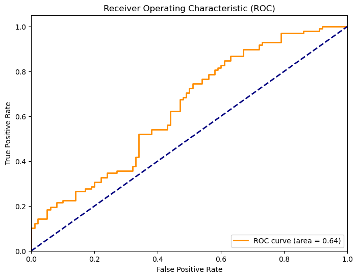
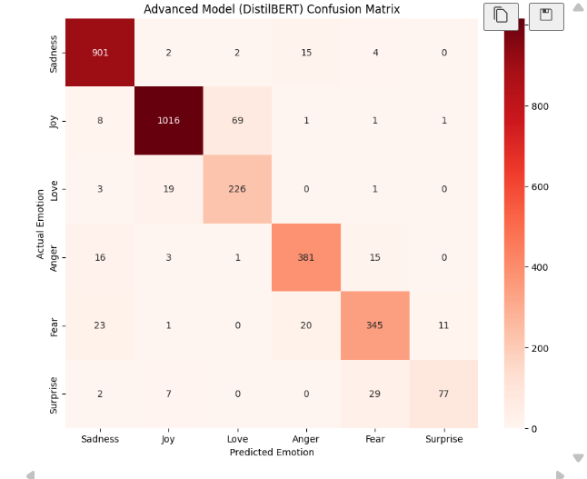
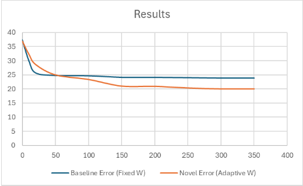

Browse My Recent
Portfolios

Project one
Stroke Prediction using Ensemble Learning: A predictive machine learning model designed to identify high-risk stroke patients. Utilizes Ensemble Learning techniques to combine multiple algorithms, achieving superior accuracy compared to single-model approaches. Features include advanced data preprocessing (imputation) and handling class imbalance.
Tech Stack: Python, Pandas, Scikit-learn

Project two
Figure 2: Confusion Matrix for the advanced DistilBERT model showing the improved difference in confusion matrix
A Natural Language Processing (NLP) system capable of analyzing text and categorizing it into distinct emotional states. Implements text preprocessing (tokenization, stop-word removal) and machine learning classifiers to interpret sentiment from unstructured user data.
Tech Stack: Python, NLTK/Spacy, TensorFlow

Project three
Figure 3: Convergence comparison. The Baseline (Fixed inertia) stagnates around error 23.83, while the Novel solution (Adaptive inertia) continues to optimize, reaching a final error of 20.08
Logistics Optimization using PSO: A Computational Intelligence solution applying the Particle Swarm Optimization (PSO) algorithm to solve complex logistics routing problems. Demonstrates the use of bio-inspired heuristic search strategies to find optimal paths and maximize efficiency.
Tech Stack: Python / Java

Project four
Stroke Prediction using Ensemble Learning: A dynamic sketch that creates a colorful car following the mouse cursor with randomly
colored windows.

Project five
Pyramid Pattern Generator: A visual representation of a pyramid constructed from rows of white rectangles, with
the option to add random colors.